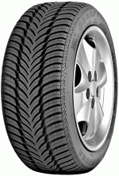
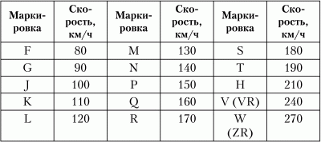
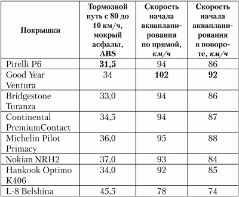
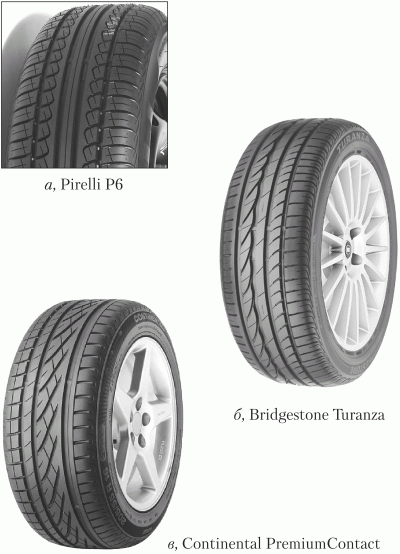
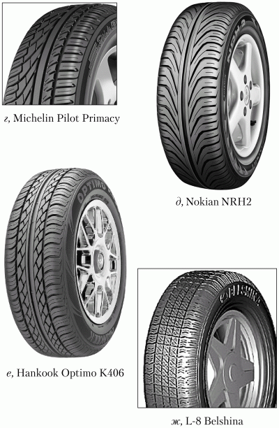

Вода
Совет № 74 Для того чтобы избежать аквапланирования, выбирайте такие покрышки, протектор которых отлично вытесняет воду При выборе резины также обращайте внимание на индекс скорости. В луже лучше не тормозить
Начнем с понимания того, что такое аквапланирование. Акеапланироеание – это эффект, при котором автомобиль теряет сцепление с дорогой из-за большого количества воды, которая заполнила протектор покрышки. Именно поэтому важно выбрать такие покрышки, протектор которых отлично вытесняет воду. Тесты показывают, что лучше вытесняют воду шины, протектор которых похож на «елочку» (рис. 7).

Рис. 7. Пример протектора, хорошо вытесняющего воду.
При выборе резины также обращайте внимание на индекс скорости (указан на «борту» шины). Индекс скорости поможет определить таблица.
Имейте в виду, что шины зимние M+S (которые у нас часто называют внесезонными) плохо вытесняют воду – они предназначены для езды по грязи и снегу, поэтому риск попасть в аварию на этих покрышках на мокрой дороге выше, чем на обычной летней резине. Что делать? Просто помнить об этом и сбавить скорость.
Индекс скорости

Что же касается так называемых внесезонных шин, то запомните следующее: есть зимние шины (M+S) и есть летние шины. Летние шины, как правило, более защищены от аквапланирования, но не все. Желательно покупать шины со специальным протектором – они дороже, но того стоят.
Резина для зимних шин более жесткая, поэтому при низких температурах она быстрее «дубеет» и теряет свои сцепные свойства. Переходить на зимнюю резину нужно, когда температура воздуха ниже 10 градусов (тепла). Как правило, это конец октября. Но октябрь и ноябрь – это осень, и снега обычно еще нет. Зато есть дождь. Получается, что шины M+S имеют лучшее сцепление с дорогой, но плохо вытесняют воду.
На некоторых шинах, обычно отечественного производства, красуется надпись All season, что означает «внесезонные шины», а продавцы распинаются, рассказывая о том, что на такой резине можно ездить круглый год. Можно, но только на отечественных авто. Просто скоростной режим любой приличной иномарки и отечественного автомобиля не сопоставимы – ваш автомобиль может легко превысить скоростной предел покрышки. К чему это приведет, думаю, вы и сами понимаете. Поэтому никакой «несезонки» на иномарках быть не должно.
Какой бы ни был у вас протектор, помните, что на мокрой дороге (я уже не говорю о скользкой) тормозной путь будет больше. Небольшой пример. Есть обычный автомобиль Audi А4, «обутый» в шины от Dunlop. При скорости 50 км/ч тормозной путь составил 11,7 м на сухом асфальте, а на мокром асфальте (на том же участке) – 14,2 м. Разница составила 2,5 м. При скорости 60 км/ч разница была уже 3,1 м, а при 100 км/ч – 8,7 м. Даже 2,5 м – это уже существенно. Вы рассчитываете остановиться в метре от попутного авто (который остановился на светофоре), а вас проносит лишние полтора метра. В результате – два разбитых автомобиля.
А теперь поговорим, как бороться с аквапланированием. Для начала нужно, чтобы вы почувствовали, что это такое. На пустой дороге (важно, чтобы рядом не было машин) попробуйте на приличной скорости (километров 80 в час) въехать в лужу. При въезде в лужу на большой скорости вода не успевает вытесняться протектором и под ним образуется водяная пленка, по которой автомобиль скользит, как на льду. Создается впечатление, что автомобиль как бы оторвался от земли и парит над ней. Вот это и есть аквапланирование.
Чем выше скорости, тем больше шансов вылететь с дороги при неудачном въезде в лужу. Но аквапланирование возможно и при 40 км/ч, и его последствия зависят от многих факторов: от качества резины (качества самой резины и ее износа), ее ширины (чем шире резина, тем лучше она «планирует», то есть тем опаснее на ней въезжать в лужу), состояния амортизаторов. Конечно, играет роль и дорожное покрытие.
Чтобы уберечься от аквапланирования, постоянно следите за износом резины. Если протектор меньше 4 мм, шину нужно менять.
Что делать, если вы почувствовали скольжение в луже? Новичок обычно пытается вывернуть руль в сторону заноса с целью выровнять автомобиль. Однако этого делать не нужно – в воде ваши старания бессильны, а когда колеса зацепятся на твердую землю, автомобиль понесет в другую сторону. И если новичок не справится с повторным заносом, то может опрокинуться. Вывод: не нужно спешить выравнивать машину в луже, нужно дождаться, пока она выедет из нее.
Если вы попали в глубокую лужу, то после выезда из нее нужно просушить тормоза. Для этого немного нажмите педаль тормоза и в таком режиме нужно проехать метров 100. После этого ваши колодки просохнут, и можно будет тормозить как обычно. В самой же луже тормозить не нужно. Если же нужно тормозить в луже, то тормозить нужно двигателем – как на гололеде.
Итак, давайте подытожим. Чтобы не почувствовать себя в роли автомобильного акробата, вам нужно помнить следующее:
• выбирайте шины с правильным протектором, хорошо вытесняющим воду;
• следите за износом протектора. Если протектор меньше 4 мм, шины – в топку!
• перед въездом в лужу сбавляйте скорость;
• в луже лучше не тормозить и не пытаться выровнять машину, если ее намного занесло;
• если все-таки необходимо тормозить в луже, тормозите двигателем;
• после выезда из лужи нужно несколько раз нажать на тормоза (но только не в пол же!!!), чтобы просохли тормозные колодки.
Совет № 75 Чтобы не было плачевных последствий гидроудара, притормозите перед лужейВода, как мы знаем, – жидкость несжимаемая. Когда она попадает в цилиндр двигателя, то происходит гидроудар. Конечно, от одной капли ничего страшного не будет. Автомобиль должен хорошо «нахлебаться» воды, чтобы случился гидроудар. Объем жидкости, попавшей в цилиндр, должен превысить объем камеры сгорания при положении поршня в верхней мертвой точке.
«Нахлебаться» автомобиль может, попав в большую лужу на большой скорости, как правило, через низко расположенный воздухозаборник.
Последствия всегда плачевны – капитальный ремонт двигателя. Обычно проще заменить двигатель целиком, чем восстанавливать двигатель после гидроудара. Если такой, не дай бог, с вами случится, то не спешите «капиталить» двигатель – может удастся найти такой же б/у двигатель – будет однозначно дешевле, даже при условии, что б/у двигатель придется вскрыть и заменить кольца.
Такая операция стоит больших денег. Как вы думаете, что лучше: притормозить перед лужей и сохранить несколько тысяч долларов или не притормаживать и получить по полной программе?
Совет № 76 Если вы все-таки попали в глубокую лужу, не поленитесь, просушите тормозаВы попали в глубокую лужу? После выезда из нее нужно просушить тормоза. Для этого немного нажмите педаль тормоза, в таком режиме нужно проехать метров 100. После этого ваши колодки просохнут, и можно будет тормозить как обычно.
Совет № 77 Не зная броду, не суйся в воду!Первым делом нужно сначала проверить глубину брода. Никуда не денешься – вам придется самим лезть в воду и мерить глубину брода палкой. Без этого никак, иначе можно утопить машинку. Если высота брода ниже сантиметров на 20, чем воздухозаборник (отверстие воздушного фильтра для забора воздуха), тогда можно вброд. Иначе двигатель может «нахлебаться» воды. Перед «нырянием» нужно отключить вентилятор охлаждения радиатора. Двигатель вы не перегреете – он будет в прохладной воде, а вот вентилятор будет низвергать потоки воды, которая может попасть через воздухозаборник в двигатель. Вы же помните о гидроударе?
В некоторых случаях вентилятор радиатора неэлектрический, и отключить его вытаскиванием предохранителя или снятием какой-то клеммы нельзя. В этом случае он приводится в движение через вискомуфту. Нужно просто подождать, чтобы двигатель остыл до той температуры, при которой вентилятор не будет срабатывать.
При движении вброд не переключайтесь и не тормозите – просто медленно и уверенно продвигайтесь. Желательно на второй передаче (я уже говорил, почему именно на второй). Дно обычно рыхлое, поэтому легко можно закопаться. Чтобы этого не произошло, старайтесь не буксовать.
Важно понять, что под колесами. Песочный берег или земляная преграда? Лучше всего продумать выезд еще до того, как вы заехали. А может, и не стоит вообще заезжать?
После выезда некоторое время тормоза будут очень слабыми, так и должно быть, нужно быть готовыми к тому, что тормоза работать не будут.
Лучше всего остановиться и первым делом посмотреть на воздушный фильтр – если внутри сухо, значит, все в порядке! А если нет? Ну, если двигатель заводится и нормально работает, тогда можно сказать, что вам повезло, а если нет, тогда пришла пора звонить мастеру.
Совет № 78 При движении в дождь включите габариты и/или противотуманные фары – так вы станете более заметны (особенно, если у вас автомобиль серого или темного цвета), и это уменьшит возможность ДТПВ дождь лучше включить габариты (или даже ближний свет) и противотуманные фары (передние и задние, если задние имеются). Если же дождь настолько сильный, что вы не видите впередиидущего автомобиля, то лучше остановиться на обочине. Когда остановитесь, не глушите двигатель, чтобы кондиционер/отопитель на посадил аккумулятор. Включите аварийку, противотуманки и переждите стихию. Как правило, даже очень сильный дождь становится меньше спустя 30–50 минут. Просто нужно подождать.
Совет № 79 Если после попадания в глубокую лужу во время движения появился неприятный писк, не волнуйтесь, ремень генератора просохнет, и писк пройдетПосле въезда в глубокую лужу вы заметили, что появился неприятный писк во время движения? Скорее всего, вода залила ремень генератора. Ничего страшного – он просохнет, и писк пройдет. В любом случае можно продолжать движение. Если писк не пропадает даже после длительного времени, нужно проверить (на СТО), натянут ли ремень, и, если нужно, обработать его водовытесняющей жидкостью вроде WD40 – писк пройдет. WD-шкой можно обработать петли дверей или механизмы дверных ручек (через соответствующие отверстия), и они перестанут скрипеть – проверено!
Совет № 80 Во время дождя в первые 10–15 минут будьте особенно осторожными!Когда дождя нет, дорога покрывается пленкой из пыли и ГСМ (горюче-смазочных материалов). Когда начинается дождь, эта пленка размокает и дорога становится очень скользкой.
Совет № 81 В дождь привыкайте тормозить немного раньше, чем вы привыкли делать это обычноЛучше тормозить заранее и плавно – ведь дорога скользкая. Желательно несколько раз нажать на педаль тормоза – это позволит сзадиидущему автомобилю лучше и быстрее распознать момент торможения. Ведь в дождь вы будете ехать с включенными габаритами (если последуете совету, приведенному выше), а когда постоянно перед глазами горят габариты впередиидущего автомобиля, легко не заметить начало его торможения.
Совет № 82 В дождь держитесь подальше от грузовиков и других крупногабаритных транспортных средств, например, автобусовИз-под колес этих машин летит очень много грязи, которая после попадания на лобовое стекло может полностью перекрыть обзор. Пока дворники «прорубят окно в Европу», пройдет несколько секунд, а за это время на дороге может случиться все, что угодно. Если грязь попала, плавно сбавляем скорость и дожидаемся, пока дворники с ней справятся. Можно им помочь, включив стеклоомыватель.
Совет № 83 Началось аквапланирование? Никакой паники!Автомобиль потерял сцепление и заскользил по воде? Главное – не паниковать. Ни в коем случае не нужно резко тормозить, выворачивать руль или добавлять газу, иначе вы рискуете сорвать автомобиль в занос. Уберите ногу с педали газа и дождитесь, пока автомобиль снова обретет контакт с дорогой.
Совет № 84 Чтобы не рисковать, старайтесь во время дождя не превышать безопасную скорость движенияСогласно независимым исследованиям, скорость начала аквапланирования (в дождь) для шин одного из самых популярных размером 205/55-R16 – 90-100 км/ч (в зависимости от особенностей шин). Для некоторых не особо удачных покрышек – 80 км/ч. Но учтите, что в тесте принимали участие новые покрышки. Если у вашей резины остаток протектора меньше 5 мм, то лучше перестраховаться и не играть в Шумахера на дороге. Помните, что если остаток протектора меньше 3 мм (2 мм и менее), шину пора заменить!
Тест покрышек

Эта таблица поможет вам выбрать безопасную скорость в зависимости от ваших покрышек (напомню, что используемый размер – 205/55/16).

Рис. 8. Виды протекторов разных производителей.

Рис. 8 (окончание). Виды протекторов разных производителей.
Проанализируем результаты таблицы. Лучшие результаты по той или иной дисциплине выделены жирным. В плане торможения на мокром асфальте лучше всего показали себя шины Pirelli Р6. На втором месте – Bridgestone Turanza. Как ни странно, шины Hankook в этой дисциплине показали себя наравне с более «именитыми» производителями – Good Year и Continental. Не самые хорошие показатели у Nokian (я ожидал от этих покрышек большего). Аутсайдер – отечественные покрышки, что неудивительно.
Что же касается скорости начала аквапланирования, то лучшие результаты показали покрышки Good Year Ventura (на моем автомобиле сейчас установлены именно эти шины, поэтому могу подтвердить результаты таблицы лично – шины в воде ведут себя отлично). На прямой аквапланирование у Good Year начинается при скорости 102 км/ч, а в повороте – на скорости 92 км/ч. На втором месте – шины Michelin (95 и 88 км/ч соответственно). Третье место разделили между собой Pirelli, Bridgestone и Continental.
Что ж, теперь вы знаете, какие шины лучше купить.
Совет № 85 Как преодолеть бездорожье после дождяПока вы не достаточно опытны, старайтесь не съезжать с асфальтовых дорог. Но иногда это не получается. Вот поехали вы на дачу или в деревню на выходные, дорога от вашего дома до шоссе, предположим, грунтовая. Пока вы отдыхали или работали, пошел дождь. И вот результат: кругом грязь и лужи, самой дороги практически не видно – вы не знаете, где можно проехать, а где можно угодить в такую яму, что авто сядет на пузо.
Что же делать?
Если есть возможность объехать сомнительный участок, лучше сделайте это, предварительно оценив обстановку: если вдоль размытой дороги тянется поле, то есть та же земля, а у вас обычная легковушка, то нет смысла объезжать размытый участок, скорее всего, вы застрянете.
Если на дороге виднеется колея от грузовика, то старайтесь в нее не заехать, потому что выехать из нее очень сложно. Нужно ехать вот так: одно колесо между колеями, а второе – на обочине. Как вариант, можно проехать иначе: одно колесо в колее, а другое – на обочине или между колеями.
Заезжать в колею можно лишь в том случае, если клиренс вашего авто позволяет сделать это.
Теперь поговорим о скорости движения. Это не автобан, это грязь, болото, поэтому старайтесь не превышать скорость 20 км/ч. Лучше медленно ехать, чем стоять и ждать трактора-спасителя. А его можно ждать очень долго.
Если дорога размыта до состояния грязи, то нужно быть готовым к тому, что в любой момент машину может понести. Хорошо, если впереди будет что-то, обо что можно упереться колесами! Если же ничего такого нет, то просто выровняйте колеса, выжмите сцепление и прокатитесь с метр, пока автомобиль не остановится. Можно даже применять торможение двигателем. Включите первую передачу и уберите ногу с газа – пусть автомобиль даже заглохнет, но зато он остановится.
Если нужно переехать с одной стороны дороги на другую, которая менее разбита, делать это нужно очень осторожно (читайте – медленно) с сильно вывернутыми колесами. Если поспешить, можно опять-таки попасть в колею.
Если вы все-таки попали в колею и хотите из нее выбраться, сдайте немного назад. Сдавать назад нужно плавно, не делая резких движений. Как только вы наберете небольшую скорость (5-10 км/ч), резко поверните в ту сторону, по которой вы только что ехали. Повторите попытку несколько раз, пока вы не переедите на противоположную сторону. Кстати, описанная техника помогает, если авто забуксовало на месте.
Тормозить на грязи нужно двигателем без использования тормозов. При торможении возможен юз, в результате которого вы уже не сможете тронуться без пробуксовки. Почему? Колесо при торможении раскатает грязь, и тогда все – только букс. Хорошо, если еще шины подходят для езды по бездорожью.
Разберемся, что делать в ситуации, когда вы застряли. Тапку в пол жать не нужно – зачем даром крутить колеса? А если у вас АКПП, то вы можете запросто убить коробку – перегреется она и поломается. Вот теперь настал тот момент, когда нужно выйти из машины. Нам нужно выяснить, есть ли вокруг палки, камни, тряпки – в общем, все, что можно подложить под колеса, чтобы улучшить их сцепление. Только так вы сможете тронуться с места. Учтите, что весь мусор, который вы найдете, нужно положить именно под колесо, а не перед колесом. Ведь колеса должны зацепиться за него протектором. А если вы положите все это перед колесом, то последнее так и будет продолжать месить грязь.
Если не получается затолкать под колесо палки и камни, тогда придется использовать домкрат. Главное, чтобы для его подставки была достаточно твердая поверхность – ведь если земля сильно размыта, домкрат использовать не получится.
Если шины зимние (М + S), а протектор хорош, можно попробовать прием «тапка в пол». Обычно рисунок протектора спроектирован так, что шины должны самоочиститься от грязи. На летних шинах такой прием можно и не пробовать – вы еще больше зароетесь в грязь. Хотя это может произойти и на зимних шинах – все зависит от протектора. В любом случае, если ничего другое не помогает, можно попробовать этот прием.